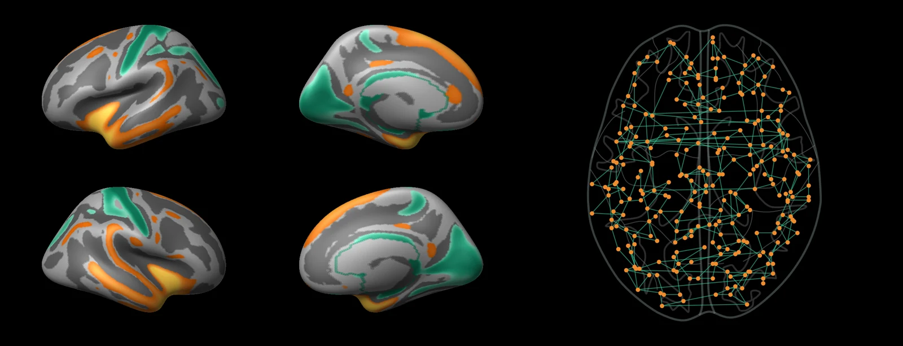

Postdoctoral Fellow, Department of Psychology, Emory University
Laboratory for Human Social Neuroscience (PI: Dr. James K. Rilling)
Does raising and caring for others change how the adult brain ages?

I work in social and affective neuroscience. My question is how parenthood and caregiving, with the emotional and social life around them, shape the adult brain and the pace at which it ages. I study it in large connectome cohorts with multimodal MRI (structural MRI, fMRI, DTI and ASL), analysed with machine learning, deep learning and advanced statistical modelling.
With Human Connectome Project data, I found that young mothers already show lower brain age than women without children (Human Brain Mapping, 2026), and that parenthood and age have opposing associations with neural phenotypes (Cerebral Cortex, in press). My Ph.D. at Ghent University asked how high-level beliefs shape social perception and social cognition.